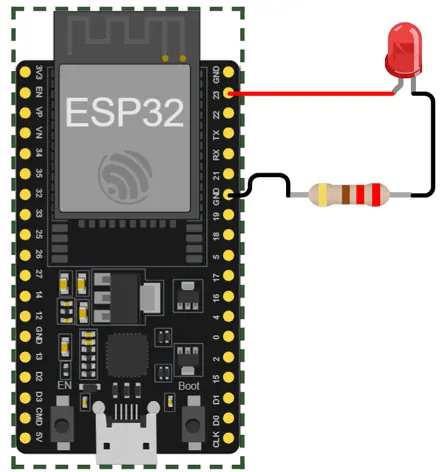

Conectividade: quando outro dispositivo entra na conversa
Até aqui, o sistema percebe o ambiente, calcula e controla componentes localmente. Agora surge uma nova necessidade: trocar informações com outros dispositivos. O mesmo projeto vai evoluir passo a passo, sem criar um circuito novo para cada tecnologia.
Controlar de perto
→
Entrar na rede
→
Conversar pela Web
→
Ser encontrado
→
Acessar de fora
Placa-baseESP32 DOIT DevKit com módulo ESP32-WROOM-32.
Circuito-baseUm LED externo com resistor permanece durante todo o bloco.
PercursoCada tecnologia aparece quando resolve uma nova necessidade do projeto.
0
Conhecendo o ESP32 antes da conectividade
O Arduino Uno já nos ensinou a base. Agora vamos observar apenas o que muda ao trabalhar com o ESP32.
1. O que muda em relação ao Arduino Uno?
Arduino Uno
ESP32 DevKit
Lógica digital de 5 V
Lógica digital de 3,3 V
Sem Wi-Fi e Bluetooth integrados
Wi-Fi e Bluetooth integrados
Pinos mais simples de reconhecer no início
GPIOs com várias funções possíveis
Recursos mais enxutos
Mais recursos internos e possibilidades de comunicação
O que continua igual: ainda teremos entradas, saídas, pinMode(), digitalWrite(), sensores, atuadores e lógica de programação.
2. Entendendo os GPIOs
GPIO vem de General Purpose Input/Output, ou entrada/saída de uso geral. É o nome dado aos pinos do microcontrolador que podem receber ou enviar sinais.
Nomes como GPIO 23, GPIO 18 e GPIO 4 identificam esses sinais internos. O número do GPIO não indica a posição física do pino na placa; por isso, os números impressos ao lado dos conectores não aparecem necessariamente em sequência.
Além disso, um mesmo GPIO pode assumir funções diferentes, como entrada/saída digital, leitura analógica, PWM ou comunicação.
3. Por que existem vários GND?
GND vem de ground (terra). É a referência elétrica comum do circuito e o caminho de retorno da corrente. Os vários pinos GND da placa pertencem ao mesmo terra elétrico e existem para facilitar as conexões durante a montagem.
Nas práticas deste bloco, escolha o GND que deixar o circuito mais simples e organizado.
4. 3,3 V × 5 V: a diferença que exige atenção
USB / 5V / VINA placa pode ser alimentada com 5 V pelo caminho previsto pelo fabricante. VIN indica a entrada de alimentação da placa.
3V3É a tensão lógica principal usada pelo ESP32.
GPIOsTrabalham com sinais de 3,3 V. Não aplique 5 V diretamente a um GPIO.
Atenção: um sensor alimentado com 5 V pode entregar um sinal de 5 V. Antes de ligar sua saída ao ESP32, confira se é necessária adaptação de nível.
5. Wi-Fi, Bluetooth e antena
Wi-Fi e Bluetooth já fazem parte do ESP32. Eles não ocupam um GPIO específico e não precisam de um módulo externo para funcionar.
No módulo ESP32-WROOM-32, a antena integrada fica em uma das extremidades do módulo e é responsável pela comunicação sem fio.
6. EN, BOOT e pinos especiais
EN (Enable): reinicia o ESP32.
BOOT: pode ser usado durante o processo de gravação em algumas situações.
Pinos especiais: alguns GPIOs participam da inicialização, memória ou outras funções internas.
Não é preciso decorar o pinout. Em cada prática indicaremos os GPIOs apropriados.
7. Reconhecendo a placa que vamos usar

Na placa, localize os nomes impressos ao lado dos pinos. Para começar, basta reconhecer GPIO 23, GND, 3V3, VIN/5V, EN e BOOT. Os demais aparecem quando forem necessários.
✓ GPIO é o número do sinal, não a posição física.✓ Vários GND facilitam a montagem.✓ A placa pode receber 5 V, mas os GPIOs trabalham em 3,3 V.✓ Wi-Fi e Bluetooth já estão integrados.✓ Alguns GPIOs possuem funções especiais.✓ Não precisamos memorizar todo o pinout.
Próximo passo
Agora que reconhecemos as diferenças essenciais do ESP32, vamos montar um LED no GPIO 23 e confirmar o funcionamento da placa antes de iniciar a comunicação sem fio.
Preparação
Montando o circuito-base
Antes da comunicação sem fio, vamos confirmar o GPIO 23 com um LED.
1. Situação
Já reconhecemos as principais diferenças do ESP32. Antes de usar Bluetooth ou Wi-Fi, vamos confirmar a montagem e o controle de uma saída simples: um LED no GPIO 23.
2. O que continua igual
pinMode() configura o pino.
digitalWrite() altera uma saída digital.
HIGH e LOW continuam representando os estados digitais.
delay() ainda pode ser usado em testes simples.
3. O que vem depois
Com o LED funcionando, o próximo passo será deixar de controlar a saída apenas pelo próprio programa e começar a receber comandos por Bluetooth e pela rede Wi-Fi.
4. Preparando a Arduino IDE
Abra a Arduino IDE.
Instale o suporte de placas esp32 by Espressif Systems pelo Gerenciador de Placas, caso ainda não esteja instalado.
Conecte o ESP32 ao computador com um cabo USB de dados.
Selecione uma placa compatível com DOIT ESP32 DEVKIT V1 e escolha a porta serial correspondente.
Se a porta não aparecer: confira primeiro o cabo USB, a conexão física e o driver USB-serial utilizado pela sua placa.
5. Circuito-base
GPIO 23liga-se ao ânodo do LED.
Cátodo do LEDliga-se ao resistor de 220 Ω.
Resistor 220 Ωliga-se ao GND do ESP32.
Montagemeste circuito será reutilizado nas próximas experiências de comunicação.
O LED acende por um segundo e apaga por um segundo continuamente. O importante é reconhecer que a lógica já conhecida continua válida no ESP32.
8. Erros comuns
Selecionar uma porta diferente da placa conectada.
Usar um cabo USB que serve apenas para alimentação.
Inverter ânodo e cátodo do LED.
Ligar o LED sem resistor.
9. Próximo problema
O ESP32 já controla o LED. Mas ainda é o próprio programa que decide quando isso acontece. Como enviar uma ordem sem fio a partir de um dispositivo próximo?
6.1
Bluetooth: controlar um dispositivo próximo
O celular envia um comando, o ESP32 interpreta e o circuito reage.
1. Situação
Queremos ligar e desligar o LED sem alterar o programa e sem depender de uma rede Wi-Fi. O dispositivo que envia a ordem está perto do ESP32. Essa necessidade combina com uma comunicação Bluetooth direta.
2. Como o Bluetooth será usado
Bluetooth permite comunicação sem fio a curta distância. Aqui usaremos Bluetooth Classic com SPP (Serial Port Profile, perfil de porta serial), que cria um canal parecido com uma comunicação serial.
Celular→Bluetooth Classic / SPP→ESP32→LED
O celular envia um caractere, o ESP32 lê esse caractere e decide o que fazer. Não é necessário roteador, endereço IP ou rede Wi-Fi para essa comunicação direta.
3. Circuito
Use o circuito da etapa Preparação — Circuito. Não há nova montagem: o LED e o resistor de 220 Ω continuam em série entre o GPIO 23 e o GND.
Comparação: em um Arduino Uno é comum acrescentar um HC-05 ou HC-06 para obter Bluetooth serial. No ESP32 utilizado aqui, o Bluetooth já está integrado.
#include "BluetoothSerial.h" disponibiliza a comunicação Bluetooth serial.
BluetoothSerial SerialBT; cria o objeto usado para enviar e receber dados.
SerialBT.begin("MBB-ESP32") inicia o Bluetooth com o nome que será procurado no celular.
SerialBT.available() verifica se há dado recebido e SerialBT.read() lê um caractere.
Compare com Serial.available() e Serial.read(): a lógica é parecida; muda a origem do dado.
6. Testando
Carregue o programa no ESP32.
Abra o Monitor Serial em 115200.
No celular Android, use um terminal Bluetooth compatível com Bluetooth Serial/SPP.
Localize e conecte-se a MBB-ESP32.
Envie L e observe o LED acender.
Envie D e observe o LED apagar.
7. Resultado esperado
O celular envia L ou D, o ESP32 executa a ação e devolve uma confirmação. Assim, a comunicação ocorre nos dois sentidos.
8. Erros comuns
Problema
O que conferir
O nome MBB-ESP32 não aparece
Confirme se o programa foi carregado, se a placa é ESP32-WROOM-32 e se o Bluetooth do celular está ativo.
Conecta, mas o LED não responde
Envie apenas os caracteres L ou D e confira o GPIO 23.
O aplicativo não oferece terminal serial
Use um aplicativo compatível com Bluetooth Classic/SPP. BLE (Bluetooth Low Energy) usa outro modelo de comunicação.
9. Próximo problema
Bluetooth resolveu a comunicação próxima. Mas e se o ESP32 precisar fazer parte de uma rede, como um computador ou celular?
6.2
Wi-Fi: colocando o sistema em uma rede
O dispositivo deixa de depender apenas de uma conexão direta e passa a ter um endereço dentro da rede.
1. Situação
O Bluetooth permite conversar com um dispositivo próximo. Agora queremos que o ESP32 entre em uma rede Wi-Fi existente. Para participar dessa rede, ele precisa se conectar e receber um endereço IP.
2. Como a conexão Wi-Fi funciona
O ESP32 entrará na rede como uma estação, isto é, como mais um dispositivo conectado ao ponto de acesso ou roteador.
ESP32→ponto de acesso / roteador→endereço IP
SSID (Service Set Identifier) é o nome da rede Wi-Fi;
a senha autoriza a entrada na rede quando ela é protegida;
IP (Internet Protocol) é o endereço usado para identificar o ESP32 naquela rede.
Em uma rede comum, o roteador normalmente fornece esse endereço IP automaticamente quando o ESP32 se conecta.
Rede Wi-Fi não é sinônimo de Internet. Dois dispositivos podem se comunicar pela mesma rede local mesmo que ela não tenha acesso à Internet.
3. Circuito
O circuito continua igual. O LED permanece no GPIO 23, mas nesta etapa ele não é o foco. O resultado observável será a conexão mostrada no Monitor Serial.
Atenção: o ESP32-WROOM-32 trabalha com Wi-Fi de 2,4 GHz. Use uma rede compatível e evite, neste primeiro teste, redes que exigem login por página Web.
WiFi.mode(WIFI_STA) coloca o ESP32 em modo station (estação), para entrar em uma rede existente.
WiFi.begin(ssid, senha) inicia a tentativa de conexão usando o nome e a senha da rede.
WiFi.status() permite verificar se a conexão já foi estabelecida.
WiFi.localIP() mostra o endereço IP recebido pelo ESP32 dentro daquela rede.
6. Testando
Substitua NOME_DA_REDE e SENHA_DA_REDE.
Carregue o programa.
Abra o Monitor Serial em 115200.
Aguarde a mensagem de conexão.
Anote o endereço IP mostrado.
7. Resultado esperado
Conectando ao Wi-Fi....
Wi-Fi conectado.
Endereco IP: 192.168.1.37
O endereço será diferente em cada rede.
8. Erros comuns
Problema
O que conferir
Fica somente nos pontos
Nome da rede, senha, sinal e compatibilidade com 2,4 GHz.
Rede da escola aparece, mas não conecta
Algumas redes institucionais exigem autenticação adicional ou possuem restrições. Para o primeiro teste, prefira uma rede simples conhecida.
Monitor Serial mostra caracteres ilegíveis
Configure o Monitor Serial para 115200.
9. Teste no Wokwi
No Wokwi, use a rede virtual Wokwi-GUEST. Execute a simulação e observe no Monitor Serial a confirmação da conexão e o endereço IP recebido.
10. Próximo problema
Agora o ESP32 tem um endereço dentro da rede. O que conseguimos fazer com esse endereço? O próximo passo será abrir uma página no navegador e fazer o próprio ESP32 responder.
6.3
HTTP: pedidos e respostas na Web
HTTP significa Hypertext Transfer Protocol. É um protocolo de aplicação usado para organizar pedidos e respostas entre clientes e servidores.
1. Situação
O ESP32 já entrou na rede e recebeu um IP. Primeiro queremos usar esse endereço para controlar o LED pelo navegador. Depois inverteremos o papel: o próprio ESP32 fará uma requisição a outro servidor.
2. Cliente e servidor são papéis
O cliente inicia um pedido (request). O servidor recebe esse pedido e devolve uma resposta (response). O papel depende da situação:
Situação
Cliente
Servidor
Celular abre a página do ESP32
Celular
ESP32
ESP32 consulta uma página na Web
ESP32
Servidor Web
Importante: HTTP não exige que a comunicação atravesse a Internet. Ele também pode funcionar somente dentro da rede local, como no servidor criado pelo ESP32.
Parte A — ESP32 como servidor HTTP
Problema: pelo Bluetooth enviávamos L e D. Agora queremos abrir uma página no navegador e tocar em links para controlar o mesmo LED.
Navegador→ pedido HTTP →ESP32→LED
3. Código — servidor HTTP
#include <WiFi.h>
#include <WebServer.h>
const char* ssid = "NOME_DA_REDE";
const char* senha = "SENHA_DA_REDE";
const int LED = 23;
WebServer servidor(80);
String criarPagina() {
String estado;
if (digitalRead(LED) == HIGH) {
estado = "LIGADO";
} else {
estado = "DESLIGADO";
}
String pagina = "<!DOCTYPE html>";
pagina += "<html><head><meta charset='UTF-8'>";
pagina += "<meta name='viewport' content='width=device-width, initial-scale=1'>";
pagina += "<title>Ambiente MbB</title></head><body>";
pagina += "<h1>Ambiente MbB</h1>";
pagina += "<p>Estado do LED: <strong>";
pagina += estado;
pagina += "</strong></p>";
pagina += "<p><a href='/ligar'>Ligar LED</a></p>";
pagina += "<p><a href='/desligar'>Desligar LED</a></p>";
pagina += "</body></html>";
return pagina;
}
void mostrarPagina() {
servidor.send(200, "text/html", criarPagina());
}
void ligarLED() {
digitalWrite(LED, HIGH);
mostrarPagina();
}
void desligarLED() {
digitalWrite(LED, LOW);
mostrarPagina();
}
void setup() {
Serial.begin(115200);
pinMode(LED, OUTPUT);
digitalWrite(LED, LOW);
WiFi.mode(WIFI_STA);
WiFi.begin(ssid, senha);
Serial.print("Conectando");
while (WiFi.status() != WL_CONNECTED) {
delay(500);
Serial.print(".");
}
Serial.println();
Serial.print("Abra no navegador: http://");
Serial.println(WiFi.localIP());
servidor.on("/", mostrarPagina);
servidor.on("/ligar", ligarLED);
servidor.on("/desligar", desligarLED);
servidor.begin();
Serial.println("Servidor HTTP iniciado.");
}
void loop() {
servidor.handleClient();
}
4. Como o servidor funciona
WebServer servidor(80) cria o servidor HTTP na porta 80, porta padrão usada por HTTP sem criptografia.
servidor.on("/", ...), servidor.on("/ligar", ...) e servidor.on("/desligar", ...) associam caminhos do endereço a funções do programa.
Quando o navegador pede /ligar, a função correspondente acende o LED e devolve a página atualizada.
servidor.send(200, "text/html", ...) envia a resposta: 200 indica sucesso e text/html informa que o conteúdo é uma página HTML.
servidor.handleClient() verifica continuamente se chegaram novos pedidos.
5. Testando o servidor
Use celular e ESP32 na mesma rede.
Carregue o programa e copie o IP mostrado.
No navegador, abra http://IP_DO_ESP32.
Use os links para ligar e desligar o LED.
6. Resultado esperado
A página mostra o estado do LED. Ao tocar em Ligar LED ou Desligar LED, o navegador faz um pedido ao ESP32, que executa a ação e devolve uma nova página.
Parte B — ESP32 como cliente HTTP
Novo problema: um sistema conectado também pode precisar buscar uma informação em outro servidor. Agora o ESP32 passa a fazer o pedido.
ESP32→ requisição GET →Servidor Web→ resposta →ESP32
http.begin() informa a URL (endereço do recurso) que será consultada.
http.GET() envia um pedido do tipo GET, usado para solicitar um recurso.
O valor retornado por GET() permite observar o código de resposta HTTP; 200, por exemplo, indica uma resposta bem-sucedida.
http.getString() lê o conteúdo recebido e http.end() libera os recursos usados pela conexão.
9. Testando o cliente
Configure a rede.
Carregue o programa.
Abra o Monitor Serial em 115200.
Observe o código HTTP e o conteúdo recebido.
No Wokwi padrão, este teste também é possível: o pedido parte do ESP32 simulado para a Internet. O endereço example.com é usado apenas como destino simples; APIs serão estudadas em outro momento.
10. Erros comuns
Problema
O que conferir
A página do ESP32 não abre
Celular e ESP32 devem estar na mesma rede e o endereço deve usar o IP mostrado no Monitor Serial.
O servidor abre, mas o LED não muda
Confira o GPIO 23 e se os caminhos /ligar e /desligar estão corretos.
A requisição do cliente retorna erro
Confirme primeiro se o Wi-Fi está conectado e se a rede permite acesso à Internet.
11. Próximo problema
O servidor funciona, mas acessar um endereço como 192.168.1.37 não é confortável — e o IP pode mudar. Seria possível encontrar o ESP32 por um nome?
6.4
mDNS: encontrando o ESP32 por nome
mDNS significa Multicast DNS. Ele permite descobrir nomes dentro da rede local sem depender de um servidor DNS configurado manualmente.
1. Situação
Para abrir a página do ESP32, precisamos descobrir e digitar seu IP. Esse endereço pode mudar depois de uma reconexão. Queremos continuar na rede local, mas usar um nome mais fácil de lembrar.
2. Como o mDNS funciona
DNS (Domain Name System) relaciona nomes a endereços IP. O mDNS leva essa ideia para a própria rede local usando mensagens multicast.
Navegador procura ambiente-mbb.local→ESP32 responde com seu IP→HTTP continua normalmente
O nome facilita encontrar o dispositivo; ele não substitui o endereço IP internamente.
3. O que muda e o que não muda
Antes
Com mDNS
http://192.168.1.37
http://ambiente-mbb.local
Nada muda no circuito nem no servidor HTTP. O mDNS acrescenta apenas uma forma mais fácil de localizar o ESP32 na rede local.
.local é local: esse nome não é um endereço público da Internet.
4. Código completo
#include <WiFi.h>
#include <WebServer.h>
#include <ESPmDNS.h>
const char* ssid = "NOME_DA_REDE";
const char* senha = "SENHA_DA_REDE";
const int LED = 23;
WebServer servidor(80);
String criarPagina() {
String estado;
if (digitalRead(LED) == HIGH) {
estado = "LIGADO";
} else {
estado = "DESLIGADO";
}
String pagina = "<!DOCTYPE html>";
pagina += "<html><head><meta charset='UTF-8'>";
pagina += "<meta name='viewport' content='width=device-width, initial-scale=1'>";
pagina += "<title>Ambiente MbB</title></head><body>";
pagina += "<h1>Ambiente MbB</h1>";
pagina += "<p>Estado do LED: <strong>";
pagina += estado;
pagina += "</strong></p>";
pagina += "<p><a href='/ligar'>Ligar LED</a></p>";
pagina += "<p><a href='/desligar'>Desligar LED</a></p>";
pagina += "</body></html>";
return pagina;
}
void mostrarPagina() {
servidor.send(200, "text/html", criarPagina());
}
void ligarLED() {
digitalWrite(LED, HIGH);
mostrarPagina();
}
void desligarLED() {
digitalWrite(LED, LOW);
mostrarPagina();
}
void setup() {
Serial.begin(115200);
pinMode(LED, OUTPUT);
digitalWrite(LED, LOW);
WiFi.mode(WIFI_STA);
WiFi.begin(ssid, senha);
Serial.print("Conectando");
while (WiFi.status() != WL_CONNECTED) {
delay(500);
Serial.print(".");
}
Serial.println();
Serial.println("Wi-Fi conectado.");
if (!MDNS.begin("ambiente-mbb")) {
Serial.println("Falha ao iniciar mDNS.");
} else {
MDNS.addService("http", "tcp", 80);
Serial.println("mDNS iniciado.");
Serial.println("Abra: http://ambiente-mbb.local");
}
servidor.on("/", mostrarPagina);
servidor.on("/ligar", ligarLED);
servidor.on("/desligar", desligarLED);
servidor.begin();
}
void loop() {
servidor.handleClient();
}
5. Entendendo as novidades
#include <ESPmDNS.h> disponibiliza os recursos de mDNS.
MDNS.begin("ambiente-mbb") registra o nome-base; o acesso será feito como ambiente-mbb.local.
MDNS.addService("http", "tcp", 80) anuncia que o dispositivo oferece HTTP na porta 80 usando TCP (Transmission Control Protocol). O papel do TCP será aprofundado no módulo de Protocolos.
6. Testando
Primeiro confirme que o acesso pelo IP ainda funciona.
No mesmo dispositivo, abra http://ambiente-mbb.local.
Ligue e desligue o LED.
Compare a experiência com o acesso pelo IP.
7. Resultado esperado
O mesmo servidor HTTP passa a ser acessado por um nome local legível, sem precisar digitar o endereço IP.
8. Erros comuns
Problema
O que conferir
O IP funciona, mas .local não
O servidor HTTP pode estar correto. O dispositivo, sistema operacional ou rede pode não resolver mDNS da forma esperada.
Nem IP nem .local funcionam
Volte ao teste de Wi-Fi e confirme que os dispositivos estão na mesma rede.
9. Próximo problema
ambiente-mbb.local facilita o acesso dentro da rede local. Mas o que acontece quando o celular sai do Wi-Fi e usa outra rede? Precisamos de outro caminho.
6.5
Tunelamento: acesso temporário de fora da rede
Um serviço local pode ser exposto temporariamente por meio de um túnel criado por um computador da mesma rede.
1. Situação
O servidor do ESP32 funciona pelo IP e pelo nome .local, mas ambos dependem da rede local. Queremos fazer um teste temporário a partir de outra rede, sem transformar o ESP32 em um servidor público permanente.
2. Como o túnel funciona
Um túnel cria um caminho intermediário entre um endereço acessível pela Internet e um serviço que continua dentro da rede local. Neste exemplo, usamos SSH (Secure Shell) para manter esse caminho.
Internet→localhost.run→ túnel SSH →Computador→ rede local →ESP32
O ESP32 não fica diretamente na Internet. O computador da mesma rede cria o túnel e encaminha as requisições recebidas até o servidor HTTP da placa.
3. Antes de criar o túnel
Deixe o servidor HTTP do ESP32 funcionando.
Anote o IP mostrado no Monitor Serial.
No computador da mesma rede, abra http://IP_DO_ESP32.
Somente continue se a página abrir e controlar o LED normalmente.
4. Ferramenta para o teste
Usaremos localhost.run, um serviço que recebe a conexão SSH do computador e fornece um endereço público temporário. Outras ferramentas de tunelamento existem, mas não precisamos trocar de serviço para compreender o caminho dos dados.
5. Conferir o SSH
ssh -V
6. Criar o túnel
ssh -R 80:192.168.1.37:80 nokey@localhost.run
Troque 192.168.1.37 pelo IP real do seu ESP32.
-R cria um encaminhamento remoto: o endereço público recebido pelo serviço será encaminhado pelo computador até a porta 80 do ESP32.
7. Testando fora da rede local
Mantenha o terminal aberto.
Copie a URL pública exibida pelo serviço.
No celular, desligue o Wi-Fi e use a Internet móvel.
Abra a URL pública.
Ligue e desligue o LED.
Ao terminar, volte ao terminal e pressione Ctrl+C para encerrar o túnel.
8. Resultado esperado
A página do ESP32 pode ser alcançada temporariamente a partir de outra rede enquanto o túnel estiver ativo. Ao encerrar o comando SSH, o caminho público deixa de encaminhar as requisições para o ESP32.
9. Erros comuns
Problema
O que conferir
O comando SSH não existe
Confira se o cliente OpenSSH está disponível no sistema.
O túnel abre, mas a página não
Confirme que o computador ainda consegue abrir diretamente o IP do ESP32.
A URL parou de funcionar
O túnel depende do terminal aberto e a URL gratuita é temporária.
A rede bloqueia a conexão SSH
Teste em outra rede ou use outra ferramenta de tunelamento permitida no ambiente.
10. Limite desta experiência
Exponha somente o LED didático. Não use esta atividade para abrir temporariamente fechaduras, portões, câmeras, relés de potência ou dados pessoais. Tornar um serviço acessível externamente cria também uma nova pergunta: quem pode acessá-lo?
11. O que o Bloco 6 construiu
Bluetooth→Wi-Fi→HTTP→mDNS→Túnel
O sistema deixou de ser apenas local. Agora consegue conversar com dispositivos próximos, entrar em uma rede, atender ou fazer requisições Web, ser encontrado por nome e, em uma experiência controlada, ser acessado temporariamente de fora da rede.
12. Ponte para Internet das Coisas
Temos um objeto físico, um programa embarcado e conectividade. Quando esse conjunto passa a ser considerado Internet das Coisas? O que diferencia um dispositivo conectado de um sistema IoT? Essa será a próxima etapa.